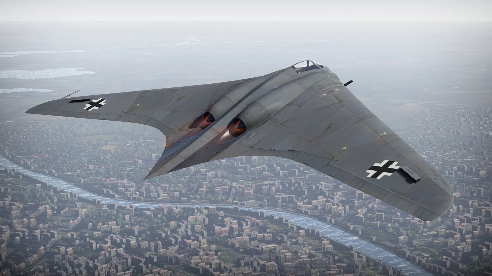

O Messerschmitt Me 262 foi o primeiro caça a jato operacional do mundo. Desenvolvido pela Alemanha, alcançava velocidades muito superiores às dos aviões aliados, tornando-se uma das aeronaves mais avançadas da guerra. Apesar de seu desempenho impressionante, entrou em serviço quando o conflito já estava próximo do fim.

O Horten Ho 229 foi um revolucionário protótipo alemão em formato de asa voadora. Seu design reduzia a resistência do ar e representava um grande avanço tecnológico para a época. Muitos consideram que seu conceito influenciou aeronaves modernas de baixa detectabilidade.

O Blohm & Voss BV 141 foi um avião de reconhecimento famoso por seu formato totalmente assimétrico. Embora sua aparência fosse incomum, a aeronave possuía boa estabilidade e oferecia excelente visibilidade para a tripulação durante as missões.

O Heinkel He 162 Salamander foi um caça a jato desenvolvido nos últimos meses da Segunda Guerra Mundial. Projetado para ser rápido e barato de fabricar, utilizava materiais como madeira devido à escassez de metal. Mesmo sendo promissor, teve pouca participação nos combates.

O Focke-Wulf Triebflügel foi um projeto alemão de caça com decolagem e pouso vertical (VTOL). Sua característica mais marcante eram as enormes hélices montadas nas asas, que giravam ao redor da fuselagem para gerar sustentação. Apesar do design revolucionário, a aeronave nunca passou da fase de projeto devido ao fim da Segunda Guerra Mundial.